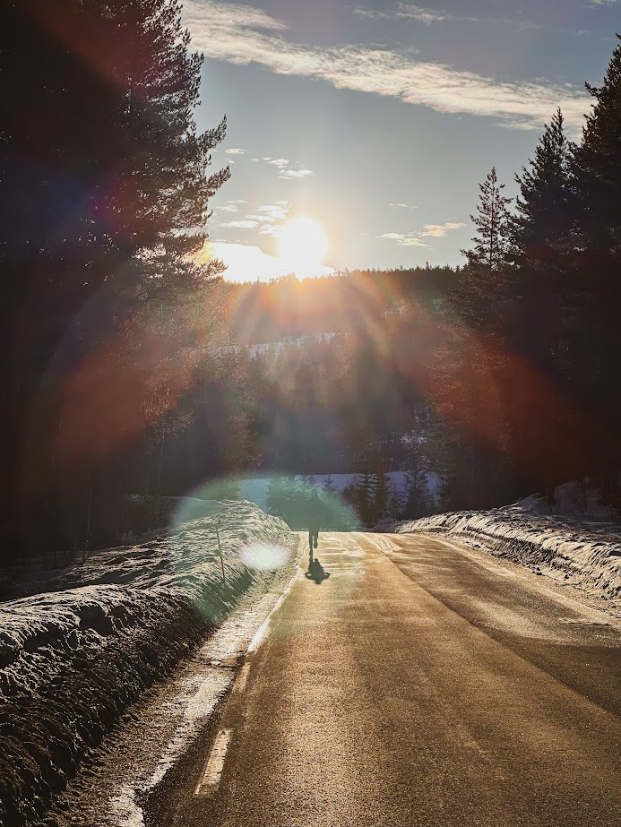
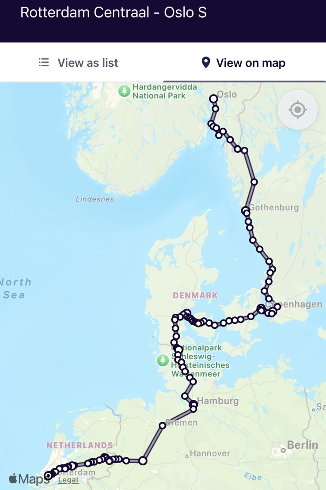
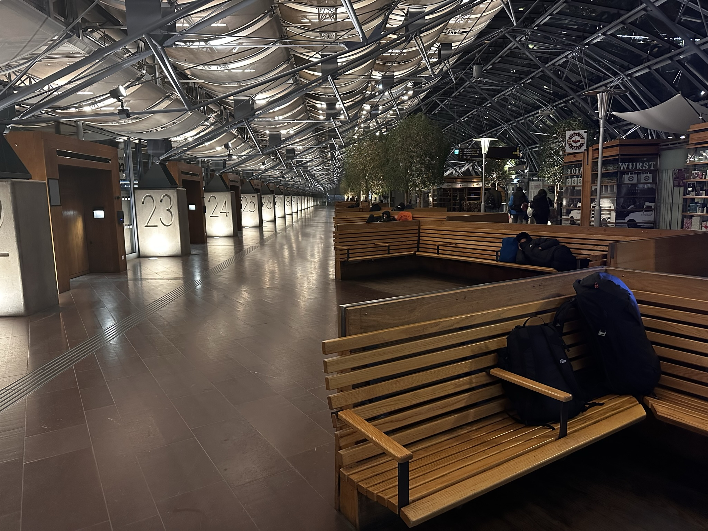
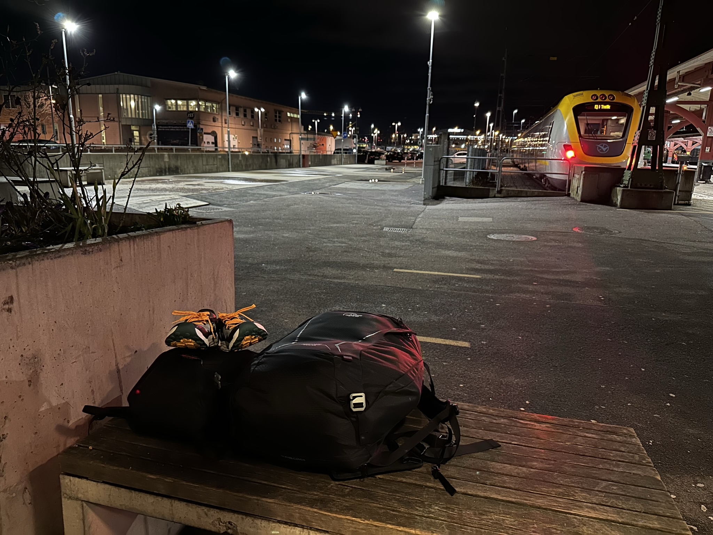
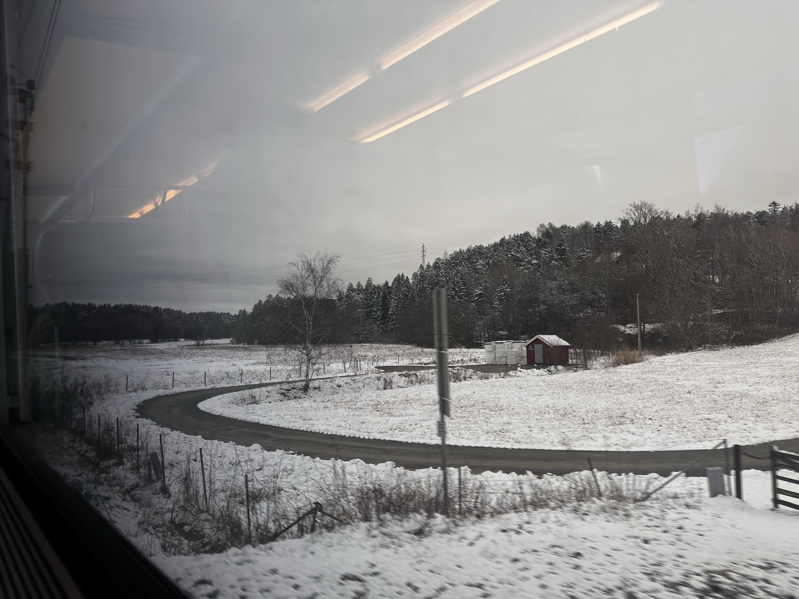

There are experiences in life which transcends all other experiences. I want to tackle the impossible challenge of explaining my transformation journey in 2023.
Accepting the Challenge
Enough about the struggle of writing—let me tell you what I actually did! It’s not every day that life invites you to take things to the next level, but my coach, Andre, did exactly that. He challenged me to step out of my cozy routine and train resilience, combining mental strength with cold exposure. The idea sounded exhilarating, but I was hesitant.
But I knew that these were the kinds of challenges you should always say yes to. As much as I looked forward to the physical test, I knew the real journey would be within. But I had doubts too. Is it effective? Was I ready to face myself? Ready to do this with a group of strangers?
As I thought about Andre’s challenge, I decided to ask my friend Joey to accompany me. He said almost yes immediately as he got a similar recommendation at work. It does seem quite funny that personal development is such a point of focus at work. Want to find a way to deal with the stress of office work? Go force yourself to take a ice bath in Norway. It comes back to the entrepreneurs of self where everything we do is to increase productivity, otherwise you fall behind. A rat race. Again I got doubts on the programme’s effectiveness but sometimes you have to row with the oars you have been given.
Everyone who knows Andre will tell you he has a gift to get the real answers out of you. Too often I answered one of his questions with a layer of nuance, too often I did not answer what I wanted to say but what I thought others wanted to hear, and too often I covered my answers in doubt. It has been a long journey but now I can say fuck nuance1, to listen and respect what I want to hear, and not let my doubts stop me from the beauty of life. All because Andre knew what my answer would be that day: yes.

I decided for myself that I can only start this journey the right way, by getting out of my comfort zone. I opened my Interrail app and entered Rotterdam Centraal in the From section of the planner, and Oslo as destination.
And off I went.
The Journey before the Journey

A 20 hour journey on the train. 6 hours on a station overnight. Rotterdam Centraal. Amersfoort. Osnabrueck. Hamburg. Copenhagen Airport. Goteborg. Sleep. Oslo.
Fuck, its cold. And where did everyone go? Those are my thoughts when I tried to sleep in Goteborg after being in the train since that morning. Everything went by so fast but it must have already been 16 hours since I left Rotterdam. A new record. Two months before I took the train to London for 4 hours. One month before I trained to Innsbruck for 8 hours. Now it has doubled again. And I am still not done. The time did not bother me, as I saw the world speed past by me. While I sat alone in carriages with a big water bottle and a good book. There is a peace to long distance train travel I cannot find anywhere else in this world. Many people have written about this feeling; the meditative peace when you are in a kind of in-between space, the rhytmic sound of the train moving along the tracks, the changing scenery, the shared space with strangers, and the feeling of letting go. It all allows your mind to wander. My mind wandered, why did I do this?
Belief
And with ‘this’, I meant everything. Why did I take the train and not the plane like the rest? Why did I choose to (possibly) torture myself in the cold for ‘personal development’? Why did I want to develop myself anyways? Have I always been like this? After watching the green fields pass by and slowly starting to see more snow covered landscapes, I found a simple belief system in me. Anything difficult is worth doing. Taking the hardest route gives the most satisfaction because that is when you grow. And I tell myself I need to grow. Because that is good. Or is that the lie I tell myself because I think I am not good enough.
Know I know as well there are no good or bad beliefs. Our core beliefs are created in childhood and are difficult to change (ever seen Inside Out?). They are often related to our basic needs, if they are met and in what way. For example, if nobody listened to you as a child you’ll form the belief that your voice doesn’t matter. Based on this belief, you’ll perform actions to cope or overcompensate for this. It can range from not talking to always talking too much, the belief in itself is not harmful. But the actions could be, especially when they are pushed to the extreme. This creates a habitual pattern of thinking, a script you can stick to for your life. But beliefs often simplify and limit who we really are, who we could be. Understand your beliefs but know, that is not your narrative. You can change your perception.
Good, with that cold hard truth revealed in my mind I continued my journey. It never feels good to break down your ego like that but in this context, it felt like a huge relief. I was open to break down my walls in exchange for growth. And that was only possible because I removed myself from my daily patterns to think about this. What a beautiful start I thought, until I arrived at Goteborg Central.
The Comfort Zone
It was already close to 1 AM. Everything was closed and based on the schedule boards I was one of the last trains to arrive. I saw the flock of people leave the exit, leaving me behind with a few people with huge backpacks. I had not eaten dinner yet due to the short transfer times and was grateful for the sole Burger King that was open. I wander around and text my family and friends about my situation. The next train is only 5 hours away, would be a waste to check-in a hotel right? I prepared myself to sleep at a nice bench with nobody around, but unfortunately, I was quickly removed by the station guards. I asked them where would be suitable to spend my next few hours and luckily, they showed the way to a big indoor bus stop but outside of the train station. And I thought to myself, maybe I should think about this more the next time. I made my way there and saw the people with the backpacks again. But I also saw a lot of other people, no backpacks but those who carry their life around in grocery bags.
|  |  |  |
To say I was out of my comfort zone is an understatement. Anything difficult is worth doing I repeated. There is a silent agreement it seems we have in our society. Or just me. But it is to look away at some of our fellow people when they need help the most. There is no doubt in my mind that we can rationalize this and give arguments why the preferrer answer to a houseless person is ‘no’ but I also believe it comes from emotions. Such as shame, knowing that they have a hard time but not really being able to do anything about it. Or a fear, that its possible for everyone to become houseless, so you divert your attention otherwise that fear only grows. The clock had hit just past 1 AM now, and I sensed my anxiety spiking. While I share a lot of sympathy with the houseless, my mind told me there was also a danger if I slept now. Would my backpacks be safe? Would I?
I don’t know if my ‘benchmate’ could sense my anxieties (he took the bench alongside me) but he struck up a conversation. “Hey, what is your name?” And so I replied. Our conversation probably lasted less than thirty minutes, as you could feel our tiredness set in. However, our talk managed to remove all those unknown variables. He was a middle-aged man with a scruffy looking beard, carrying this Lidl bag and a thick green coat. The coat had seen better days. His English was quite solid with a hint of a German accent. I found out my benchmate had lived and worked all across northern Europe moving from city to city. A real nomad. Never with a real place to stay. He would go where the work was, often something very labor intensive and then sleep wherever he could. He would have to get up early this morning too. I did not ask where the money went if it was not for accommodation but he did mention a family. And just like that, the unknown became known. My anxiety calmed down as I didn’t see him anymore as someone who could have been anyone but now I see an incredible worker.
Hearing his story, it weirdly made me envious. Anything difficult is worth doing. And if he didn’t have a difficult story. Other difficult stories often comes with a beautiful end where someone ‘started from the bottom’ and are now at their top. It didn’t seem he thought about a top but rather tried to make a living at the bottom. And these benches were definitely designed to make your sleep as uncomfortable as possible. My whole body already started to ache and he would do this day after day. I was falling asleep with my thoughts on a nomad lifestyle when I suddenly awoke with bright lights and loud yelling. The security guards had come again, to tell us the bus stop was now closed too. I don’t remember the time, could have been 2 or 3 AM. They told me they would open again in 2 hours. I remember thinking, this was the biggest bullshit I had ever seen.

.jpg){kind=link}
There was no point to this. We had to go outside (0 degrees Celcius yay!) and scatter around in the public space in search of a new spot. After another good thirty minutes of searching I managed to find a bench next to the train tracks with good lightning. There was also a train available but I did not dare to enter it in case they would move it for maintenance. I sat my stuff down and I only started to think on the reason. It did seem a hotspot for the houseless but during my stay, there was no disturbance or any problems at all. This closure of the bus stop had the only intention to bully. The same with the design of the benches. But none of these measures had solved the problem. I would say, it had only made them worse now that everyone is walking around in the middle of the night. I did not sleep outside, as I felt it was too open. I simply waited to go back inside.
Back inside, I had a new benchmate. This time no chitchat but I felt comfortable enough to get some shuteye. The uncomfortable feeling I experienced at the beginning of the night made way for understanding and anger. The understanding of a group of people I have not been in contact with ever in my life. The anger I feel to see how we treat them. They say that outside of your comfort zone is when you learn the most, and I am so glad I did go outside my comfort zone. I have adopted a new belief, one in which we as a society simply don’t know how to deal with those who don’t have their basic needs met. Where we apply measures that are broken, simply because they feel good but in its process lose our humanity.
I took the 6 AM train to Oslo. And the journey still has to begin..
Footnotes
Fuck Nuance by Kieran Healy. If you want to know how nuance can harm progress.↩︎